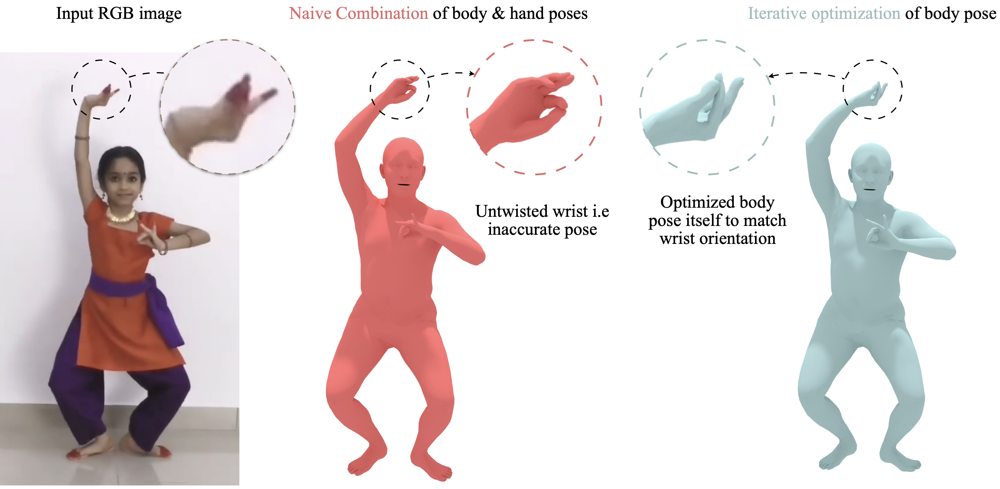
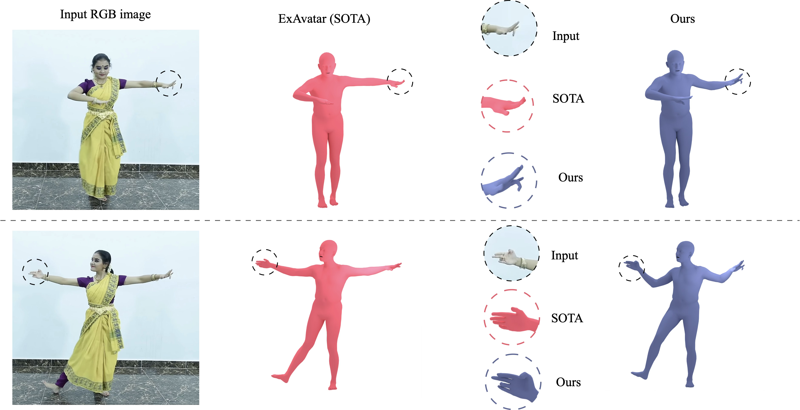

Nritya3D is a two-stage framework designed to recover expressive 3D human meshes from monocular video inputs, specifically targeting the preservation of complex cultural dance forms. Indian classical dances, such as Bharatanatyam, are rich in body movements and feature intricate hand gestures (called Mudras). Reconstructing these shapes in 3D presents extreme challenges for existing single-view methods, which struggle with self-occlusions, lack of depth, and conflicting orientations within the hierarchical skeletal joints.

Visual Demonstration of Nritya3D in Action. The framework reconstructs smooth full-body dance movements (Adavus) while successfully mapping high-fidelity, detailed hand mudras from monocular video input.
Core Contributions
- Decoupled Hand-Body Estimation: We propose the Full-Body Pose Estimator (FPE) to separate the regression of body parameters and hand parameters using specialized models, which are then combined.
- Hand-Aware Kinematic Optimization: We introduce the Full-Body Refiner (FPR) and a tailored skeletal loss function to resolve unnatural joint twists (specifically at the wrist) that arise from simple parameter stitching.
- High-Fidelity Mudras: Evaluation against SOTA models demonstrates that Nritya3D achieves superior reconstruction of detailed hand postures while maintaining global body pose alignment.
Nritya3D Framework Pipeline

Overview of the Nritya3D Pipeline. (1) The Full-Body Pose Estimator (FPE) estimates body pose via ExAvatar and hand pose via Hamer/MANO. (2) The parameters are merged and passed to the Full-Body Refiner (FPR), which iteratively optimizes the body parameters using a skeletal loss function to align the wrist joints correctly.
Decoupling and Refinement
In standard parametric models like SMPL-X, the skeletal hierarchy dictates that the wrist orientation is directly inherited from the elbow and shoulder. Consequently, a naive blend of separately estimated hand and body parameters leads to coordinate misalignment and unnatural wrist twists.
To address this, Nritya3D optimizes the merged parameters per-frame. Since the hand orientation from the dedicated transformer (Hamer) is near-perfect, we lock the hand joint parameters and backpropagate the skeletal loss solely to the body parameters. This allows the gradient flow to adjust the arms and shoulders, resolving conflicting orientations and restoring the authentic posture of the dancer.
💡 Optimization Objectives & Losses
The refiner minimizes a combined objective function $\mathcal{L}_{total}$ to align the 3D joints:
$$\mathcal{L}_{total} = \mathcal{L}_{skel} + \mathcal{L}_{angle} + \mathcal{L}_{pose-prior} + \mathcal{L}_{preserve}$$
Where:
• Skeletal Loss ($\mathcal{L}_{skel}$): A Charbonnier loss penalizing discrepancies between the 3D joints of the optimized mesh ($\hat{x}$) and the target merged joints ($x$).
$$\mathcal{L}_{skel} = \sum_{l=1}^{L} \lambda_{joints}^2 \sum_{j=1}^{J} \sqrt{\left\| \hat{x}_j^{(l)} - x_j^{(l)} \right\|^2 + \epsilon}$$
• Angle Prior Loss ($\mathcal{L}_{angle}$): Prevents unnatural joints bending, particularly at the elbows and knees.
$$\mathcal{L}_{angle} = \lambda_{angle}^3 \sum_{l=1}^{L} \sum_{i \in \mathcal{J}_{bend}} \left[ \exp\left(s_i \cdot \theta_i^{(l)}\right) \right]^2$$
• Pose Preserve Loss ($\mathcal{L}_{preserve}$): Ensures that the optimization does not deviate excessively from the initial predicted pose.
Qualitative Performance
Below are qualitative comparisons showing how Nritya3D resolves the unnatural wrist rotations produced by naive combinations and improves upon SOTA monocular regressors like ExAvatar.

Qualitative Comparison of Wrist Orientation. Naive merging produces conflicting wrist orientations and unnatural bends. Nritya3D (Ours) aligns the limbs smoothly, capturing the precise mudra pose.

Expressive Reconstruction on Bharatanatyam Dance Sequences. The framework is evaluated on dynamic dance forms, showing robust and consistent body-hand tracking across complex movements.
Quantitative Benchmarks
We evaluate Nritya3D against whole-body estimation methods on the Expressive Hands and Faces (EHF) dataset. Standard metrics include Mean Per-Vertex Position Error (MPVPE), Procrustes-aligned MPVPE (PA-MPVPE), and Procrustes-aligned Mean Per-Joint Position Error (PA-MPJPE). Error is in millimeters (mm).
| Method | PA-MPVPE (mm) $\downarrow$ | MPVPE (mm) $\downarrow$ | PA-MPJPE (mm) $\downarrow$ | |||
|---|---|---|---|---|---|---|
| Full-Body | Hands | Full-Body | Hands | Full-Body | Hands | |
| Hand4Whole [CVPRW 2022] | 51.06 | 10.74 | 78.10 | 39.35 | 60.96 | 10.72 |
| ExAvatar [CVPR 2023] | 42.23 | 17.02 | 67.17 | 38.23 | 50.83 | 17.23 |
| Ours (Nritya3D) | 43.62 | 8.14 Best | 69.66 | 37.56 Best | 51.39 | 7.80 Best |
While the full-body metrics experience a minor trade-off due to the optimization of the arm skeleton to accommodate proper wrist orientations, the accuracy of the hands is significantly improved. The PA-MPJPE error for the hands drops by **54.7%** compared to ExAvatar, showing the effectiveness of our optimization strategy in preserving mudras.
Data Attribution: Qualitative results were generated using the Bharatanatyam Adavus Dataset (Shah, 2024). We thank the authors for making this resource available for research purposes under the CC-BY-NC-ND 4.0 license.